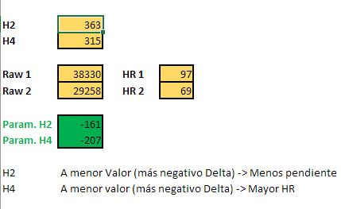
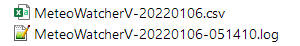
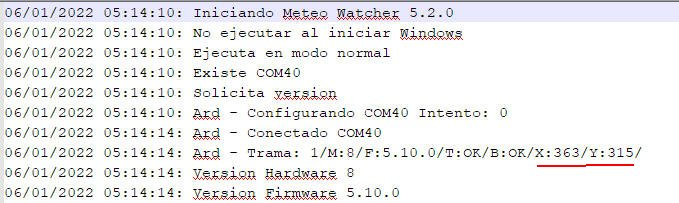
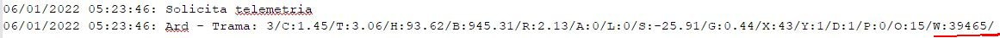
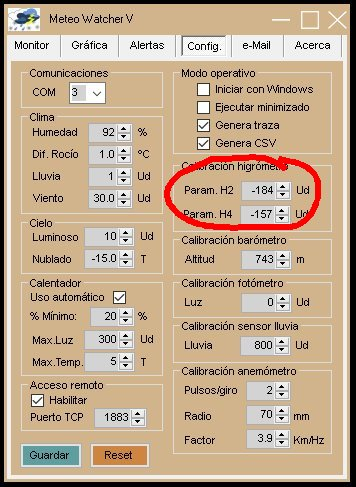

|
Recalibración del higrómetro del Meteo Watcher V |
||
|
|
|
|
| Introducción Uno de los problemas que suelen presentar los sensores de humedad es que en la zona intermedia de la franja de funcionamiento (HR medias) las mediciones que presentan son correctas, pero en la zona alta, donde más crítico es su comportamiento para un observatorio astronómico, las mediciones suelen tender a ser más altas de lo real, incrementando incluso su pendiente a menor temperatura de trabajo. En el Meteo Watcher V se utiliza el sensor BME280 de la casa Bosch. Dispositivo especialmente diseñado para aplicaciones móviles, presentando una gran linealidad y alta precisión. Y lo que es mejor, una rápida respuesta ante cambios rápidos de las condiciones ambientales. Pero así y todo, desde mi experiencia tiene tendencia a marcar de más en las zonas extremas de la curva de humedad. El dispositivo en sí no proporciona directamente el valor de humedad relativa (HR), sino que la calculan los drivers partiendo de unos valores en crudo (raw) que proporciona el dispositivo. Por tanto, él método a utilizar se basa en calcular unos valores incrementales que permiten modificar la ecuación de conversión a unos valores más adecuados a nuestro sensor de humedad. Al mismo tiempo, se ha observado que con el paso de los años, el envejecimiento del dispositivo hace que los valores raw obtenidos vayan derivando hacia valores mayores dentro del rango establecido (0 - 65.535). Con este método también se puede corregir el efecto de esta deriva.
Hoja de cálculo Para la realización de los cálculos de manera sencilla se proporciona una hoja Excel, que puedes descargar aquí. En esta hoja sólo es necesario cumplimentar los valores de las casillas coloreadas en amarillo, siendo los resultados de las casillas verdes los destinados a utilizar en los campos de la pestaña de Configuración de Programa de Control del Meteo Watcher V. 
Obtención de valores H2 y H4 En primer lugar, debe configurar el Programa de Control para que genere el fichero de traza (log), tras lo cual, debe reiniciar el programa. Una vez reiniciado, en la carpeta MeteoWatcherV dentro de Documentos, encontrarás dos ficheros con nombres similares a:  Siendo el que nos interesa el que tiene extensión "log". Ábralo con el "Block de notas" o cualquier otro editor similar.  Interesan los valores que aparecen el la línea 8 (Trama), concretamente los valores de X:363 e Y:315, que corresponden a los valores que deberá introducir en el Excel en las celdas H2 y H4 respectivamente. Cada BME280 viene configurado de fábrica con unos valores específicos de calibración para H2 y H4, por lo que es normal que los valores que usted obtenga sean distintos a los mostrados en el ejemplo.
Datos de calibración Para realizar la calibración deberá basarse en una estación meteorológica fiable, con mediciones contrastadas, y que esté lo más cercana posible al observatorio para que sus datos de humedad relativa sean muy similares a lo que mida el sensor del Meteo Watcher V. De esta estación deberá disponer de los valores de HR que ha ido midiendo a lo largo de un día. Aunque nos interesan los instantes (hora y minuto) de máxima y mínima humedad, que normalmente deben coincidir con el amanecer y mediodía solar. En el fichero de traza (log), encontrará muchas entradas del tipo:  Donde figura el día, la hora y en el parámetro W, el valor raw que interesa. En el caso del ejemplo el Meteo Watcher proporcionó el 6/ENE/2022 a las 05:23 un valor raw de HR w:39465. Deberá buscar en el fichero de traza los instantes más próximos al máximo y mínimo de humedad relativa que ha obtenido de la estación meteorológica de calibración. De esta manera dispondrá de cuatro valores: máxima HR (HR1) y valor raw que mostraba el Meteo Watcher (Raw1), así como mínima HR (HR2) y el valor raw que mostraba el Meteo Watcher (Raw2). Esos cuatro valores serán los que introducirá en las correspondientes celdas de la hoja Excel. En los campos Param. H2 y Param. H4 obtendrá los valores que utilizará para recalibrar el Meteo Watcher desde el Programa de Control, en la pestaña de Configuración.  Una vez introducidos los datos, deberá pulsar el botón Guardar y ya habrá recalibrado el sensor de humedad relativa. En el caso de querer anular la recalibración, sólo tiene que poner estos dos valores a cero. Se obtendrán mejores resultados cuanto más alejadas estén las humedades relativas medidas. Soliendo proporcionar buenos resultados si utiliza una humedad máxima que ronde entre el 92% y el 95% y una menor que esté cercana al 50% o 60%. No se trata de un método formal de recalibración, pero permite obtener unos resultados más ajustados en los rangos altos de humedad. Se que algunos usuarios deshabilitan las alertas de humedad y rocío, pero para los que no nos gusta ver chorreando de agua el telescopio y las cámaras, puede ayudarnos a trabajar con niveles más reales de humedad.
|